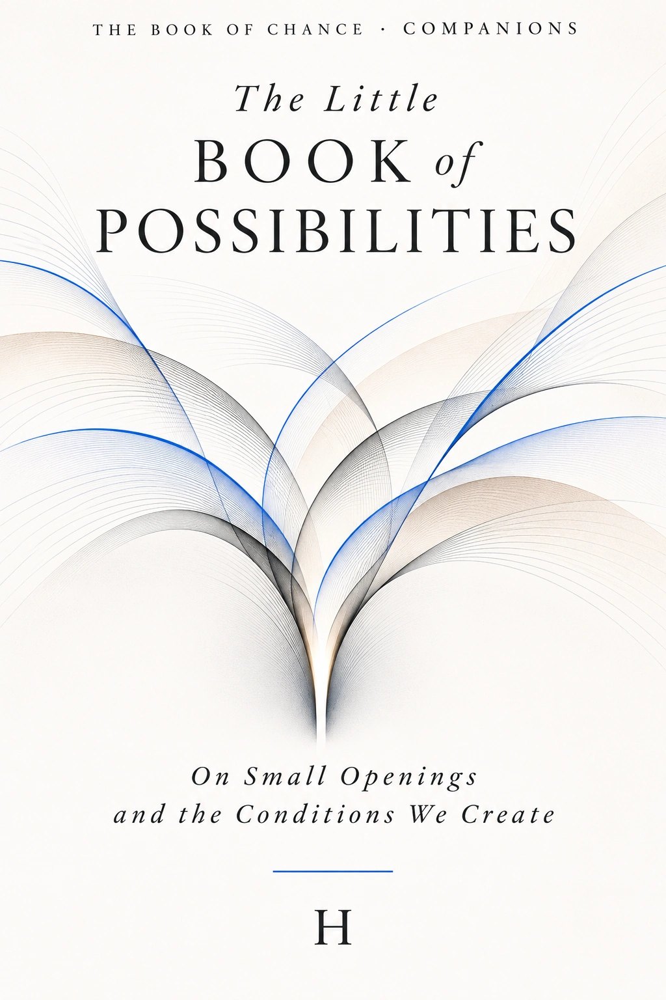
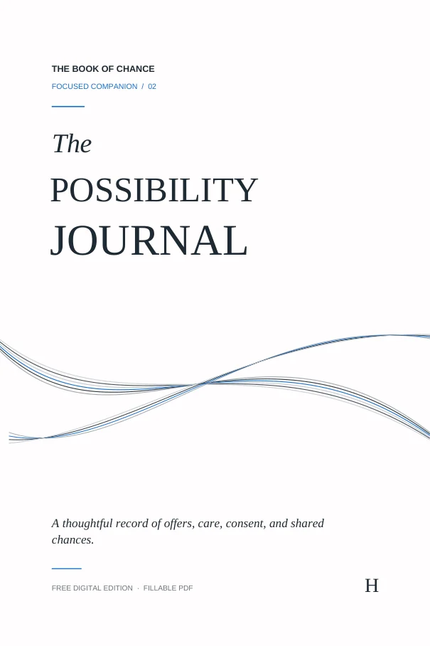

Light Edition
A page of possibility
White, charcoal and blue. The complete illustrated text.
Books, reflections and future learning resources exploring chance, choice and the ways our lives shape one another.
Everything currently available is free to read or download, without an account. The collection can grow without turning the site into a storefront.
On the Lives We Inherit and the Futures We Shape
Twelve readings, original parables and six illustrated interpretations of uncertainty, agency, dignity and shared possibility. A standalone work of reflective philosophy by H.
White, charcoal and blue. The complete illustrated text.

Charcoal, ivory and blue. Exactly the same words and illustrations.
Two covers, one text. Both versions have exactly the same readings, diagrams and illustrations.
Or read the complete book onlineThe Little Book of Possibilities considers the difference between a choice we can imagine and an opportunity we can actually reach. Twelve accessible chapters explore fair access, rest, consent, shared knowledge and everyday actions.

On Small Openings and the Conditions We Create
A short literary work on how we can widen possibilities without pretending to control every outcome.
What does it mean to make a fair choice when our starting conditions differ? What can hope ask of us when nothing is guaranteed? And how can a group disagree well? Conversations of Chance offers twelve original scenarios and guided discussions that follow the twelve readings of The Book of Chance.

A literary discussion companion designed to sit naturally beside the foundational book and the other companion publications.
“A useful unresolved question is a result.” — H
A concise illustrated guide to Hope, Acceptance, Reflection, Growth and Community. Each chapter includes an original scene, a practical question and an optional exercise. The values are complementary, not a test of worth.

Explore how these values work together when life is uncertain—and what to do when they seem to pull in different directions.
Three complete, free-to-read philosophical essays. Explore unseen connections, responsible choices and the limits of our duties to strangers.

A letter on the duties we have to strangers, the promises we keep to loved ones, and how to help without turning care into an unlimited demand.
Browse all three Letters →Earlier in the series: No. 02 — When Good Choices Lead to Bad Outcomes · No. 01 — On the People We Never Meet
Four free fillable PDFs across three complementary journals. Begin with the complete companion, or choose a focused practice. None requires membership or a daily commitment.

48 pages combining daily reflection, acts of possibility, weekly review, a Turning of Chance and open writing space.
Same interior as the Dark Edition. Fillable PDF · 6 × 9 in.
Download Light Edition · PDF ↓
The same 48-page journal in a charcoal cover, matching the two-edition idea of The Book of Chance.
Same interior as the Light Edition. Fillable PDF · 6 × 9 in.
Download Dark Edition · PDF ↓
40 pages for noticing circumstance and choice, with fourteen full entries, two weekly reviews and open pages. No streaks, scores or requirement to write every day.
Download Daily Journal · PDF ↓
40 pages for thoughtful acts of support: twelve guided opportunities, three follow-up reviews and open pages. Consent and personal boundaries are built in.
Download Possibility Journal · PDF ↓Individual fillable PDF sheets for a single reflection. Edit them in a PDF reader or print them to complete by hand; all are free.
A short daily or situational practice. Editable fields and a print-friendly layout.
Download PDF worksheet 02 · ACTION / FILLABLE PDFConsider one voluntary, respectful act. Editable fields and a print-friendly layout.
Download PDF worksheet 03 · WEEKLY / FILLABLE PDFA thoughtful look across your week. Editable fields and a print-friendly layout.
Download PDF worksheetPrefer to write on screen? The interactive reflection workspace works without an account and doesn't submit your writing.
Open the reflection workspaceThe library is being designed to accommodate shorter essays, guided reflections and additional literature as they are written and prepared for publication. These are plans, not available downloads.
Future discussions and supplementary texts that draw connections with established ideas and contemporary experiences.
In development · Not yet availableEPUB is best for adjustable text and dedicated ebook readers. PDF preserves the fixed illustrated page layout. The PDFs currently supplied are reader proofs, pending final digital accessibility and production checks.
Foundational writings remain accessible without membership, payment or registration. Additional resources may have their own formats and availability when they are ready.